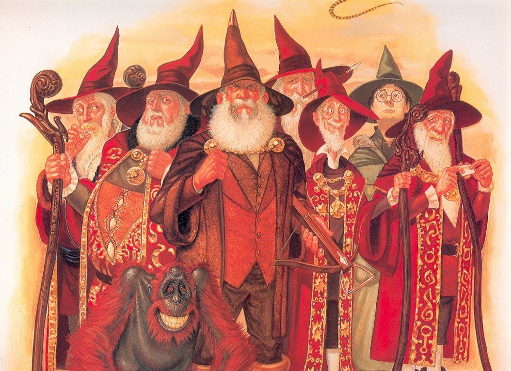
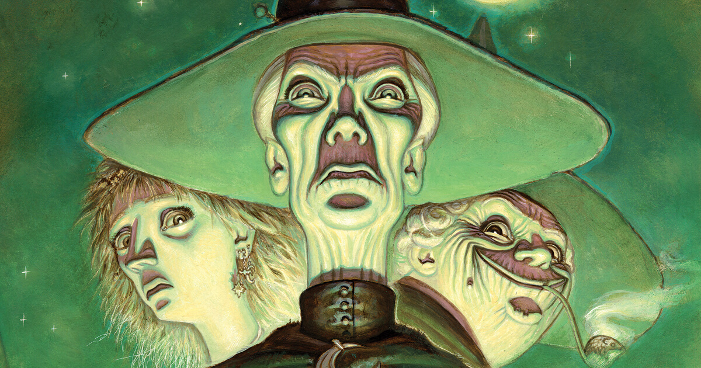
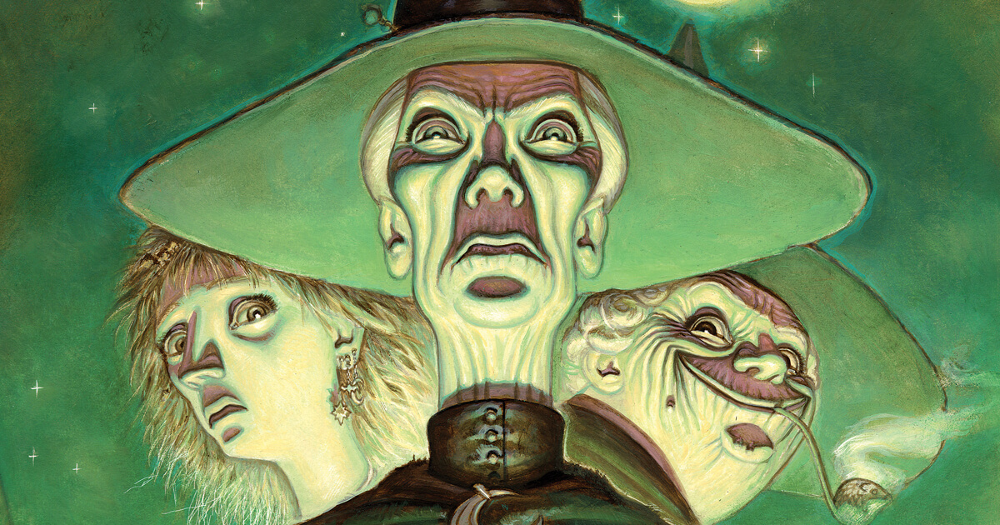
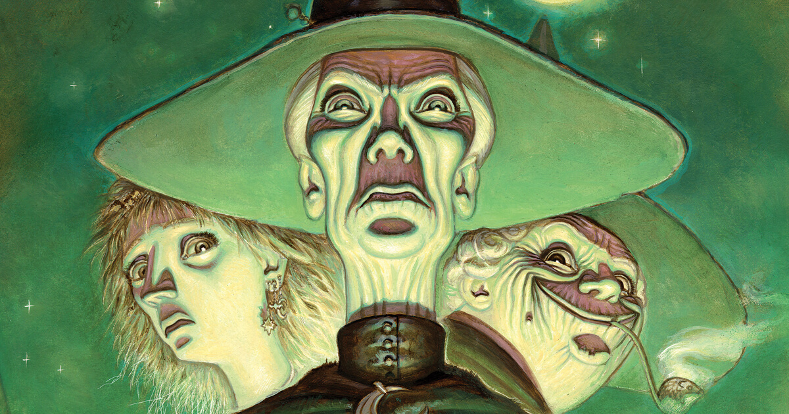

Mundodisco
Mundodisco es una saga de novelas escrita por Terry Pratchett. Los hechos transcurren en el Mundodisco. El escenario es medieval fantástico, aunque algunas partes del mundo están ambientadas en la era victoriana a lo largo de la serie. Los libros frecuentemente hacen parodias, o al menos toman ideas prestadas, de autores como J. R. R. Tolkien, Robert E. Howard, H.P. Lovecraft o William ShakespeareSagas


 





"En un mundo plano sostenido por cuatro elefantes impasibles habitan
los estrafalarios personajes de esta novela: un hechicero avaro y torpe, un turista ingenuo cuyo fiero equipaje
le sigue a todas partes sostenido por cientos de patitas, dragones que existen si se cree en ellos, gremios de ladrones y asesinos,
espadas mágicas, la Muerte y, por supuesto, un extenso catálogo de magos y demonios... En esta serie de novelas se dan cita todos los temas y
situaciones del género fantástico, visto a través del personalismo y corrosivo sentido dela comicidad de un autor inglés que se ha convertido en uno de
los escritores de humor de mayor éxito y fama en el mundo."

"La ciudad de Ankh-Morpork está gobernada por un Patricio, Lord Vetinari, que ha legalizado los asesinatos, los robos, la mendicidad y
la prostitución para tenerlos controlados. El Gremio de Asesinos y el de Ladrones reciben una cuota de asesinatos y robos "razonables",
y el sistema funciona con normalidad. Excepto para la Guardia Nocturna, que se ha visto reducida a tres hombres: el capitán Sam Vimes,
el sargento Colon y el cabo Nobby Nobbs. La institución está degradada y envilecida.
Por otra parte, en las montañas, el rey de una mina de enanos decide enviar a su hijo adoptivo Zanahoria a ingresar en la Guardia para que se haga un hombre. "

"Un nuevo día, sereno y apacible, empieza en Mundo Disco. Como es habitual, la gran tortuga navega por el éter entregada a reflexiones inescrutables,
sosteniendo en su caparazón a los cuatro elefantes sobre los que descansa el mundo. Sin embargo, se avecina una inexorable colisión con una malévola estrella roja,
y sólo una persona puede poner remedio al inminente desastre: Rincewind, el inepto y cobarde hechicero. Por desgracia, Rincewind fue visto por última
vez cuando caía por el borde del mundo... Esta serie de novelas está considerada la más divertida y heterodoxa saga fantástica jamás escrita.
Como ha señalado la crítica, "las novelas de Terry Pratchett deberían ser lectura obligada para aquellos que se toman la vida demasiado en serio"."

"En esta cuarta entrega de la hilarante saga del Mundodisco, Mortimer es un joven soñador y despistado a quien le toca en suerte una inesperada tarea:
convertirse en aprendiz de la Muerte y aplicarse en liberar almas de su envoltura carnal. La verdad, Mort no está demasiado capacitado para ello, y en una de sus primeras misiones,
liberar el alma de una atractiva princesa que está a punto de ser asesinada, decide en su lugar << liberar >> el alma del asesino, interfiriendo así en los designios del Destino y
provocando el consiguiente desaguisado. Por su parte, la Muerte, habiendo delegado buena parte de su trabajo en Mort, se dedica a beber, jugar a los dados y embarcarse en entrevasadas
reflexiones filosóficas..."

"Un mago moribundo cede su bastón -y por tanto su poder- a Eskarina, un recién nacido que, según los rituales admitidos, no puede ser mago sino bruja.
Con el tiempo, el rito de iniciación se completa con un aprendizaje más formal en la Universidad Invisible, inefable centro de estudios esotéricos,
donde el mago Simón hace gala de sus increíbles poderes. Juntos, Eskarina y Simón tendrán que hacer frente a una invasión de extrañas criaturas que amenazan con destruir el Mundodisco..."

"Tres hermanas brujas se oponen radicalmente a los reyes del país de Lancre. Tienen sus motivos para ello, y también un maquiavélico plan para alzarse con la victoria.
Naturalmente, los habitantes de Lancre se verán involucrados y todo derivará hacia una convulsión caótica."

"Parecía un trabajo fácil.. Después de todo, ¿cuán difícil puede ser el asegurarse de que una sirvienta no se case con un príncipe?
Pero para las brujas Granny Weatherwax, Nanny Ogg y Magrat Garlick, en ruta hacia la distante ciudad de Genua, las cosas no son nunca tan simples...
Después de todo, solo disponen del vudú de la señora Gogol, un gato tuerto y una varita mágica de segunda mano que solo hace calabazas..."

"Soul Music es una historia sobre la memoria y el deseo de olvidar. Y tambien una historia de sexo, drogas y Música con Rocas Dentro.
Pero, sobre todo, es la decimosexta entrega de la serie del Mundodisco, del genial Terry Pratchett. Hay una Muerte en la familia."